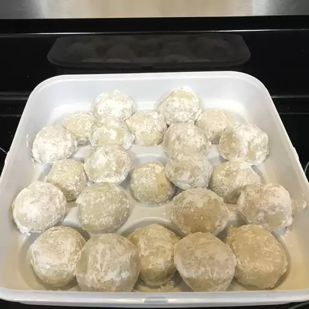

Russian Tea Cakes

Description
These Russian tea cakes are rolled in powdered sugar for a sweet finish and a snowball-like appearance. My grandmother
"Bubba" brought this Russian tea cake recipe with her when she came from Lithuania, and now my family has made it for
many generations. I pass it on in the true spirit of the holiday season!
Russian tea cakes (a.k.a. snowball cookies) are incredibly easy to make with pantry staples. The
melt-in-your-mouth dessert is a simple way to satisfy your sweet tooth during the holiday season.
Ingredients
- Butter:These easy Russian tea cakes start with a stick of unsalted butter.
- Vanilla:A teaspoon of vanilla extract enhances the flavor and adds complexity.
- Flour:All-purpose flour adds structure and holds the dough together.
- Sugar:
- Walnuts: